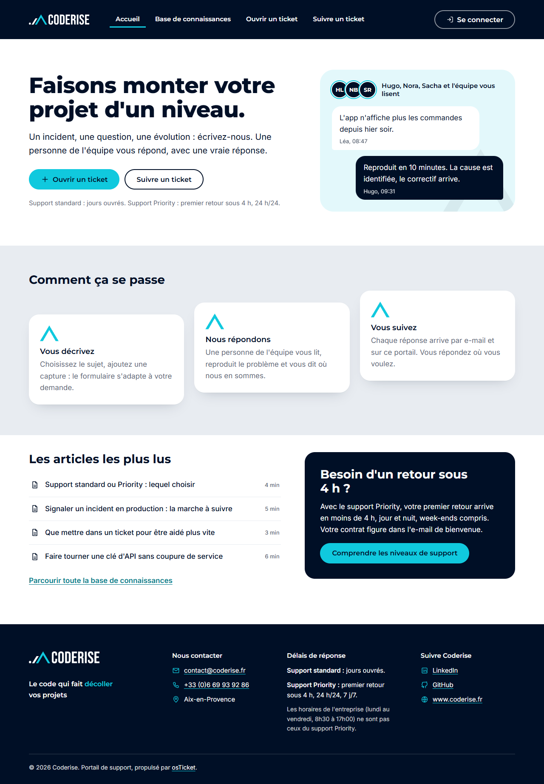
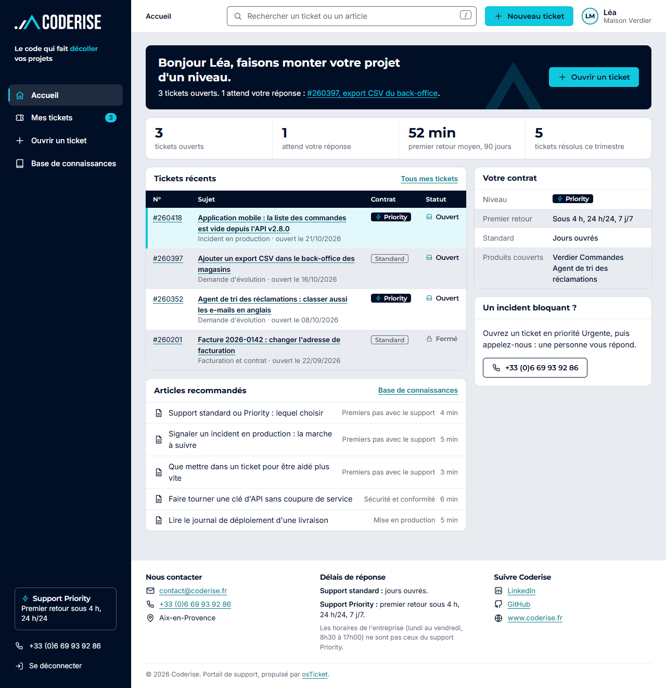
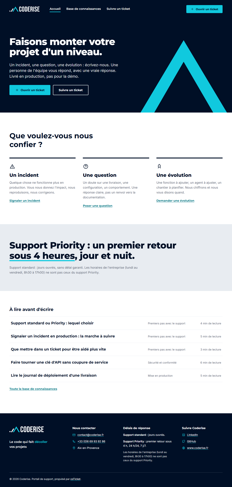
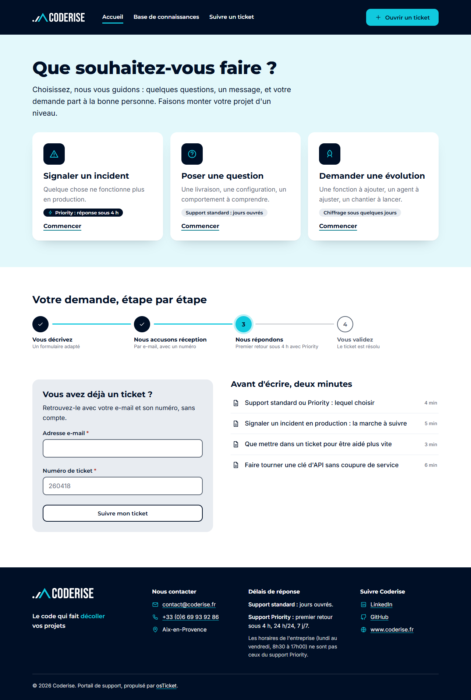
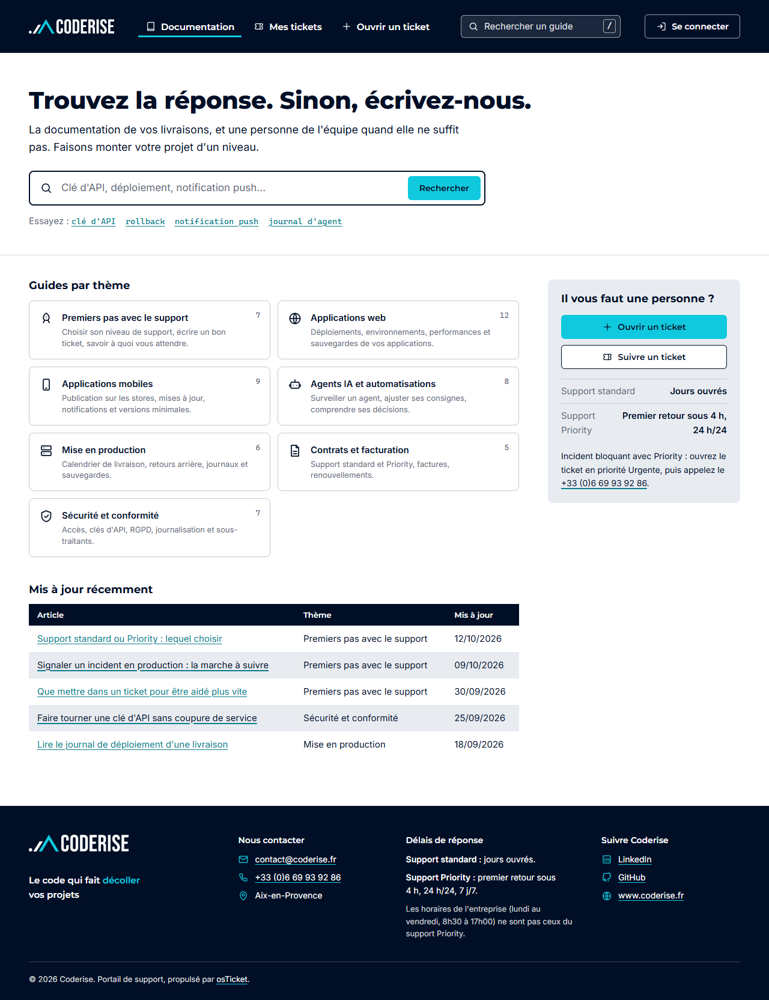

Cinq maquettes du portail de support Coderise
Charte graphique v1.0 (juin 2026), polices Montserrat et Inter, logos officiels détourés sans retouche. Rien n'est développé dans osTicket : ce sont des pages statiques, en français, avec des données fictives. Chaque maquette montre dix pages, un état vide et un formulaire avec erreurs.
- Niveau 1 : feuille de style, logo, en-tête, pied de page.
- Niveau 2 : gabarits réécrits.
- Support standard : jours ouvrés. Priority : premier retour sous 4 h, 24 h/24.
Les cinq propositions

01 Atelier
Chaleureux : une personne vous répond. Avatars, bulles de conversation, boutons-pastilles, frise d'ascension.
Pour qui : Clients non techniques (commerce, direction) à rassurer.
Niveau 25 j environ
Risques
- Bulles et avatars : réécriture du gabarit de fil (thread-entry), les classes d'osTicket ne suffisent pas.
- Frise d'ascension : « pris en charge » et « correctif en test » ne sont pas des états du portail (statuts personnalisés ou dérivés des réponses, à coder).
- Barre d'état sur navy et pastilles : beaucoup de bleu nuit dans les bulles de l'équipe, à vérifier sur de longs fils.
AccueilOuverture de ticketConnexionInscriptionInscription : confirmationSuivi d'un ticketMes ticketsMes tickets : état videBase de connaissancesArticle

02 Poste de travail
Dense : rail bleu nuit, tableaux serrés, panneau de propriétés, articles suggérés pendant la saisie.
Pour qui : Clients qui ouvrent beaucoup de tickets : équipes techniques, revendeurs.
Niveau 26 j environ
Risques
- Rail latéral : le gabarit d'osTicket est une colonne unique de 840 px, tout le gabarit de page change.
- Tableau de bord (compteurs, délai moyen, contrat) : données absentes du portail, à coder ou à retirer.
- Densité : lisibilité sur mobile et en accessibilité à surveiller (corps 14,5 px).
AccueilOuverture de ticketConnexionInscriptionInscription : confirmationSuivi d'un ticketMes ticketsMes tickets : état videBase de connaissancesArticle

03 Sommet Recommandée en première phase
Éditorial : le bleu nuit domine, grande typographie, chevron cyan en cadrage, altimètre du délai dans le bandeau.
Pour qui : Décideurs et chefs de projet : marque forte, peu de tickets, lecture confortable.
Niveau 1 étendu4 j environ
Risques
- Les bandeaux sombres demandent d'ouvrir un conteneur dans l'en-tête pour y placer le titre de page.
- Altimètre du délai : donnée non native (voir README).
- Beaucoup de bleu nuit : à tempérer si le public attend un portail « clair » ; le cyan doit rester un signal.
AccueilOuverture de ticketConnexionInscriptionInscription : confirmationSuivi d'un ticketMes ticketsMes tickets : état videBase de connaissancesArticle

04 Parcours
Guidé : choisir, décrire, suivre. Étapes numérotées, « prochain pas », altimètre, bibliothèque en parcours.
Pour qui : Clients qui hésitent sur quoi écrire ; équipes qui veulent des tickets mieux remplis.
Niveau 27 j environ
Risques
- Assistant en quatre étapes : osTicket sert un formulaire unique, l'étapage est visuel et la progression en direct demande du JavaScript.
- « Prochain pas », regroupement « À vous de jouer » et progression 4 étapes : données dérivées à coder.
- Parcours de la bibliothèque : l'ordre des articles n'existe pas dans le modèle.
AccueilOuverture de ticketConnexionInscriptionInscription : confirmationSuivi d'un ticketMes ticketsMes tickets : état videBase de connaissancesArticle

05 Référentiel
Documentation d'abord : arborescence, recherche en en-tête, fil de ticket façon suivi d'incident, étiquettes.
Pour qui : Développeurs et DSI côté client, habitués aux outils de suivi.
Niveau 26 j environ
Risques
- Arborescence de la base : sous-catégories limitées, sommaire « sur cette page » à générer.
- Étiquettes (priorité, environnement, impact) : issues des champs du formulaire, à mapper.
- Ton plus froid : moins rassurant pour un public non technique.
AccueilOuverture de ticketConnexionInscriptionInscription : confirmationSuivi d'un ticketMes ticketsMes tickets : état videBase de connaissancesArticle
Côte à côte, page par page
Bureau 1280 px, haut de page. Cliquez une capture pour ouvrir la page.
Accueil
Ouverture de ticket (avec erreurs)
Connexion (avec erreur)
Inscription
Inscription : confirmation
Suivi d'un ticket
Mes tickets
Mes tickets : état vide
Base de connaissances
Article
Mobile, 390 px
Aucun débordement horizontal mesuré. Accueil, ouverture de ticket, suivi d'un ticket.
Coût et risques
| Proposition | Niveau | Durée | Développement hors cœur requis |
|---|---|---|---|
| 01 Atelier | 2 | 5 j | Frise d'avancement, bulles |
| 02 Poste de travail | 2 | 6 j | Rail, tableau de bord, articles suggérés |
| 03 Sommet | 1 étendu | 4 j | Bandeaux de titre, altimètre |
| 04 Parcours | 2 | 7 j | Assistant, prochain pas, groupement, parcours |
| 05 Référentiel | 2 | 6 j | Arborescence, sommaire, étiquettes |
Commun aux cinq : l'indicateur de délai Priority (premier retour sous 4 h) n'est pas affiché par le portail client d'osTicket ; il demande un petit développement (lecture du plan de SLA et de la première réponse de l'équipe). Voir le README.